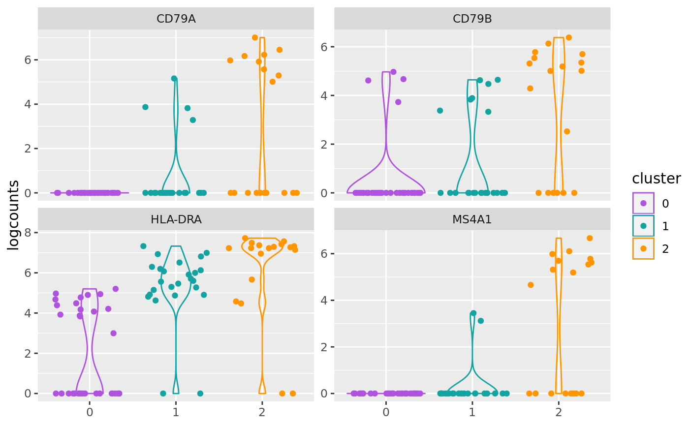
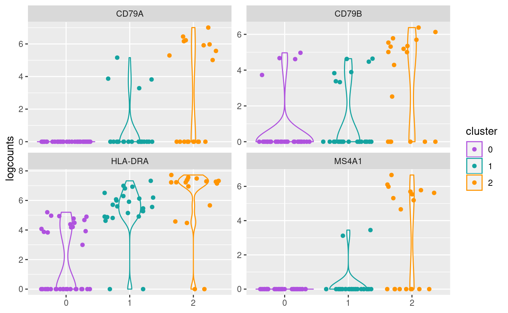

R/AllGenerics.R, R/plotCounts-methods.R, R/plotDots-methods.R, and 1 more
plotCounts.RdVisualize genes on a dot or violin plot.
plotCounts(object, ...) plotDots(object, ...) plotViolin(object, ...) # S4 method for SingleCellExperiment plotCounts( object, genes, assay = c("logcounts", "normcounts"), geom = c("violin", "dot"), perSample = TRUE, legend = getOption("acid.legend", default = TRUE), title = NULL ) # S4 method for Seurat plotCounts( object, genes, assay = c("logcounts", "normcounts"), geom = c("violin", "dot"), perSample = TRUE, legend = getOption("acid.legend", default = TRUE), title = NULL ) # S4 method for SingleCellExperiment plotDots( object, genes, perSample = TRUE, colMin = -2.5, colMax = 2.5, dotMin = 0L, dotScale = 6L, color = getOption("acid.continuous.color", default = ggplot2::scale_color_gradient2(low = "orange", mid = "gray75", high = "purple", midpoint = 0L)), legend = getOption("acid.legend", default = TRUE), title = NULL ) # S4 method for Seurat plotDots( object, genes, perSample = TRUE, colMin = -2.5, colMax = 2.5, dotMin = 0L, dotScale = 6L, color = getOption("acid.continuous.color", default = ggplot2::scale_color_gradient2(low = "orange", mid = "gray75", high = "purple", midpoint = 0L)), legend = getOption("acid.legend", default = TRUE), title = NULL ) # S4 method for SingleCellExperiment plotViolin( object, genes, assay = c("logcounts", "normcounts"), perSample = TRUE, scale = c("count", "width", "area"), color = getOption("acid.discrete.color", default = AcidPlots::scale_color_synesthesia_d()), legend = getOption("acid.legend", default = TRUE), title = NULL ) # S4 method for Seurat plotViolin( object, genes, assay = c("logcounts", "normcounts"), perSample = TRUE, scale = c("count", "width", "area"), color = getOption("acid.discrete.color", default = AcidPlots::scale_color_synesthesia_d()), legend = getOption("acid.legend", default = TRUE), title = NULL )
| object | Object. |
|---|---|
| genes |
|
| assay |
|
| geom |
|
| perSample |
|
| legend |
|
| title |
|
| colMin |
|
| colMax |
|
| dotMin |
|
| dotScale |
|
| color |
To set the discrete color palette globally, use: options(acid.color.discrete = ggplot2::scale_color_viridis_d()) |
| scale |
|
| ... | Additional arguments. |
ggplot.
Dot geom currently only supports logcounts.
Updated 2020-10-12.
data(Seurat, package = "AcidTest") ## Seurat ==== object <- Seurat ## Plotting with either gene IDs or gene names (symbols) works. genes <- head(rownames(object), n = 4L) print(genes)#> [1] "MS4A1" "CD79B" "CD79A" "HLA-DRA"## Per sample mode enabled. plotCounts(object, genes = genes, perSample = TRUE)## Per sample mode disabled. plotCounts(object, genes = genes, perSample = FALSE)